Spieltag ist eine App für Trainerinnen und Trainer von Kindermannschaften. Damit haben Sie am Spieltag alles im Griff:
- Aufstellung, Wechsel und Tore mit der richtigen Spielminute
- Spieluhr mit Halbzeit und Nachspielzeit
- fertiger Spielbericht zum Abtippen ins DFBnet
- funktioniert ohne Internet auf dem Sportplatz
Ihre Daten bleiben nur auf Ihrem Handy. Nichts wird ins Internet geschickt.
1. App aufs Handy holen
Die App wird nicht im Play Store geladen, sondern direkt über Chrome. Das dauert eine Minute und ist kostenlos. Sie brauchen dafür einmal Internet.
Beschrieben ist Android mit dem Browser Chrome. Die Bilder sind vereinfachte Skizzen – auf Ihrem Handy kann es leicht anders aussehen.
1Link in Chrome öffnen
Öffnen Sie diesen Link auf dem Handy in Chrome:
Die App erscheint. Tippen Sie dann oben rechts auf die drei Punkte ⋮.
2„App installieren“ antippen
Im Menü steht „App installieren“. Bei manchen Handys heißt es „Zum Startbildschirm hinzufügen“ – das ist genauso richtig.
3Mit „Installieren“ bestätigen
Es erscheint ein kleines Fenster mit dem App-Symbol. Tippen Sie auf „Installieren“ (oder „Hinzufügen“).
4Fertig – das Symbol ist da
Auf dem Startbildschirm finden Sie jetzt das rote Fußball-Symbol „Spieltag“. Ab jetzt starten Sie die App immer über dieses Symbol – nicht mehr über Chrome.
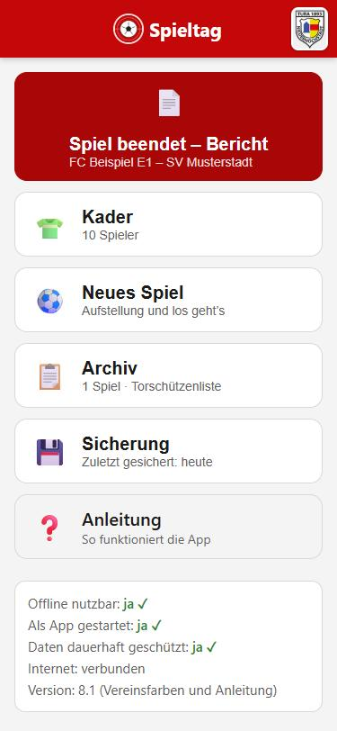
5Kurz prüfen
Öffnen Sie die App über das Symbol. Unten auf der Startseite steht ein Kasten:
- „Offline nutzbar: ja ✓“ – die App läuft jetzt auch ohne Internet.
- „Als App gestartet: ja ✓“ – Sie haben sie richtig gestartet.
Test: Flugmodus einschalten und die App öffnen. Sie startet trotzdem.
2. Kader anlegen
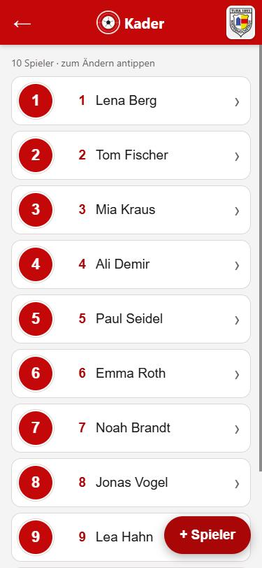
Die Spielerliste
Auf der Startseite „Kader“ antippen. Hier stehen alle Spieler, sortiert nach Rückennummer.
Unten rechts mit „+ Spieler“ legen Sie einen neuen Spieler an. Einen Spieler antippen, um ihn zu ändern oder zu löschen.
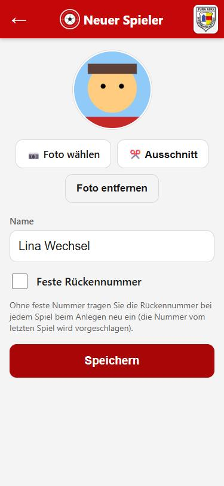
Spieler anlegen
Name eintragen und „Speichern“.
Feste Rückennummer: Hat das Kind immer dieselbe Nummer, setzen Sie das Häkchen und tragen die Nummer ein. Ohne Häkchen wird die Nummer bei jedem Spiel neu vergeben (siehe „Spiel anlegen“).
Ohne Foto zeigt die App einen roten Kreis mit der Nummer bzw. den Anfangsbuchstaben.
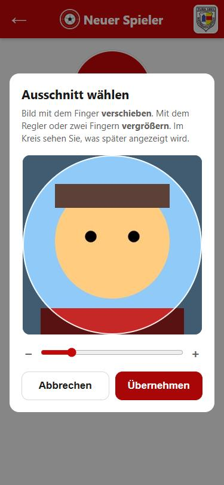
Foto und Ausschnitt
Mit „Foto wählen“ machen Sie ein Bild mit der Kamera oder nehmen eins aus der Galerie.
Danach erscheint das Fenster „Ausschnitt wählen“. Der Kreis zeigt genau, was später zu sehen ist:
- Bild mit dem Finger verschieben, bis das Gesicht im Kreis ist,
- mit dem Regler oder zwei Fingern vergrößern,
- „Übernehmen“.
Mit „✂️ Ausschnitt“ können Sie den Ausschnitt später noch ändern.
3. Spiel anlegen
Auf der Startseite „Neues Spiel“ antippen. Es geht in drei Schritten:
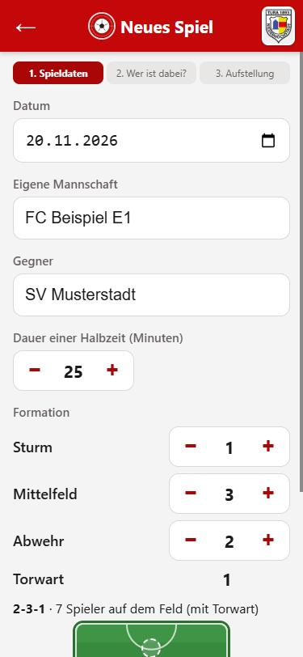
1Spieldaten
Datum, eigene Mannschaft und Gegner eintragen.
Mit − und + stellen Sie die Dauer einer Halbzeit und die Formation ein (wie viele Spieler in Sturm, Mittelfeld und Abwehr – ein Torwart ist immer dabei). Ein kleines Spielfeld zeigt sofort, wie es aussieht.
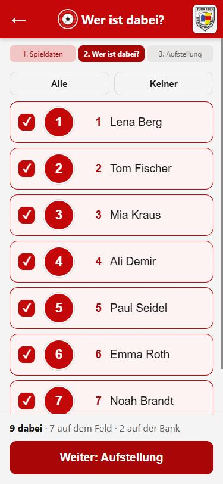
2Wer ist dabei?
Zuerst sind alle Spieler angehakt. Wer heute fehlt, einfach antippen – dann ist der Haken weg.
Unten sehen Sie, wie viele auf dem Feld und auf der Bank sind.
Sind noch Trikots vom letzten Spiel nicht zurück, steht oben ein gelber Hinweis.
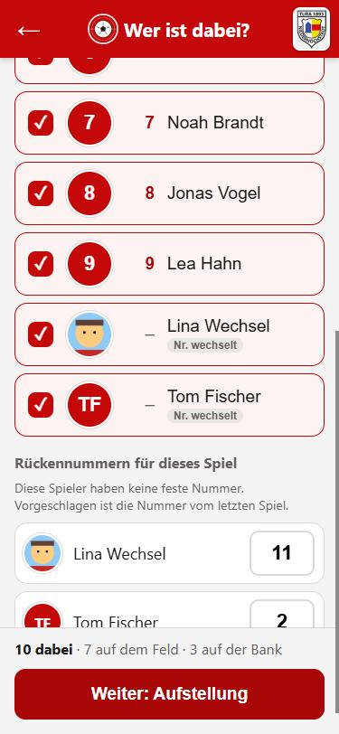
Rückennummern für dieses Spiel
Spieler ohne feste Nummer (Hinweis „Nr. wechselt“) bekommen hier die Nummer für dieses Spiel. Vorgeschlagen ist die Nummer vom letzten Spiel – einfach ändern, wenn das Kind heute ein anderes Trikot hat.
Die App passt auf, dass jede Nummer nur einmal vergeben ist.
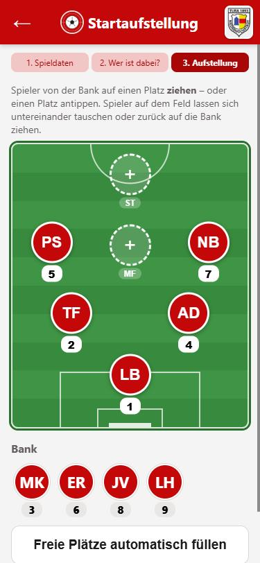
3Startaufstellung
Ziehen Sie Spieler mit dem Finger von der Bank auf einen freien Platz. Oder tippen Sie auf einen Platz und wählen den Spieler aus der Liste.
- Spieler auf dem Feld auf einen anderen ziehen = die beiden tauschen.
- Spieler vom Feld auf die Bank ziehen = er sitzt wieder auf der Bank.
- „Freie Plätze automatisch füllen“ besetzt den Rest auf einmal.
Zum Schluss „Spiel anlegen“ antippen.
4. Während des Spiels
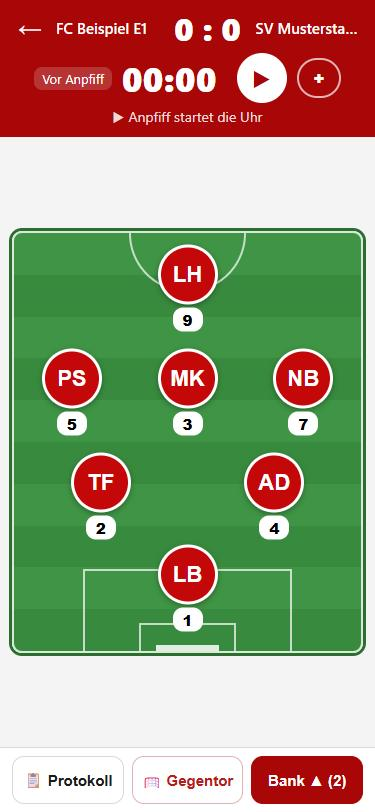
Die Spielansicht
Oben: Spielstand und Uhr. In der Mitte: Ihr Spielfeld mit der Aufstellung. Unten: Protokoll, Gegentor und Bank.
Die Uhr
- ▶ = Anpfiff bzw. weiter, ⏸ = Uhr anhalten.
- Ist die Halbzeit um, vibriert das Handy und die Pause beginnt automatisch. Mit ▶ starten Sie die 2. Halbzeit.
- Nach dem Ende der 2. Halbzeit vibriert es wieder und der Spielbericht öffnet sich.
- Mit + neben der Uhr tragen Sie Nachspielzeit ein. Dann läuft die Uhr entsprechend länger, und Ereignisse stehen im Bericht z. B. als „25+2“.
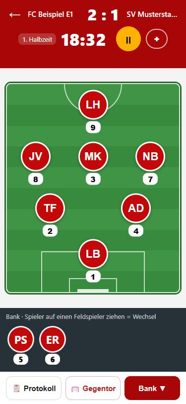
Wechseln
Unten rechts „Bank ▲“ antippen – die Bank fährt hoch.
Einen Bankspieler auf den Feldspieler ziehen, der raus soll. Fertig – die Spielminute wird notiert.
Positionen tauschen
Einen Feldspieler auf einen anderen Feldspieler ziehen. Die beiden tauschen die Plätze. Das ist kein Wechsel und wird nicht notiert.
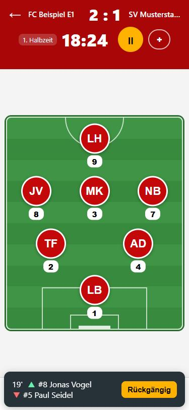
Die Meldung mit „Rückgängig“
Nach jedem Wechsel und jedem Tor erscheint unten kurz eine Meldung:
- ▲ grün = kommt rein
- ▼ rot = geht raus
Vertippt? Einfach „Rückgängig“ antippen (geht etwa 5 Sekunden lang).
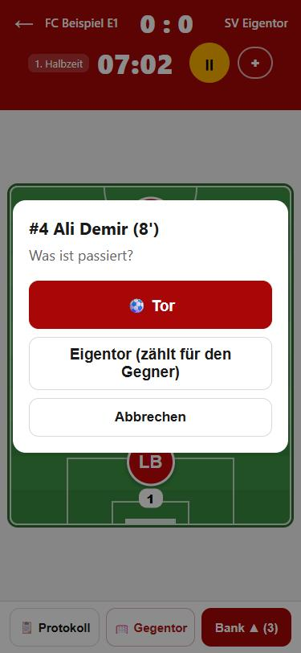
Tor eines eigenen Spielers
Zweimal schnell auf den Spieler tippen. Dann wählen Sie:
- „⚽ Tor“ – groß erscheint „TOR!“, das Handy vibriert kurz und unser Spielstand erhöht sich.
- „Eigentor“ – der Spieler hat ins eigene Tor getroffen. Das Tor zählt für den Gegner und wird mit dem Namen des Spielers notiert.
Die Minute wird schon beim Doppeltipp festgehalten.
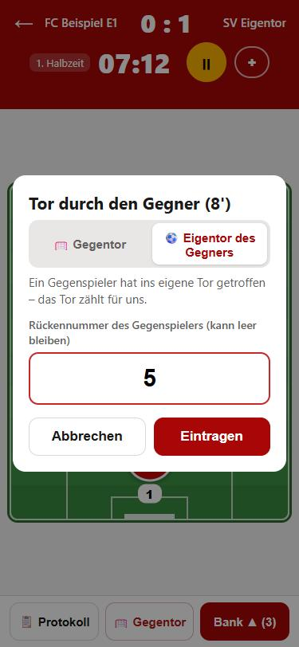
Tor durch den Gegner
Unten „Gegentor“ antippen. Oben im Fenster wählen Sie:
- „Gegentor“ – der Gegner hat ein Tor geschossen.
- „Eigentor des Gegners“ – ein Gegenspieler hat ins eigene Tor getroffen, das Tor zählt für uns.
Dann die Rückennummer des Gegenspielers eintippen (darf auch leer bleiben) und „Eintragen“. Die Minute trägt die App selbst ein.
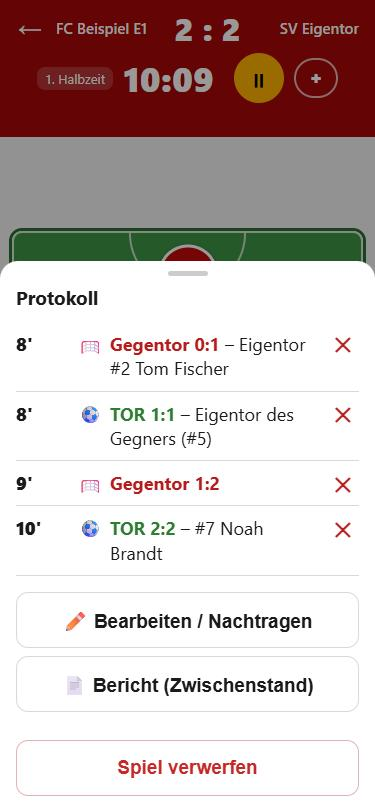
Protokoll
Unten links „Protokoll“ zeigt alle Tore und Wechsel mit Minute.
Mit dem roten ✕ löschen Sie einen Eintrag – auch noch lange danach. Vorher fragt die App nach und zeigt, wie sich der Spielstand ändert.
5. Nach dem Spiel: Bericht
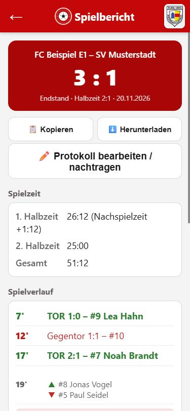
Nach dem Abpfiff öffnet sich der Spielbericht: Endstand, Halbzeitstand, Spielzeit, alle Tore und Wechsel mit Minute, Torschützen und Startaufstellung.
- Kopieren – den Text dann z. B. ins DFBnet oder in eine Nachricht einfügen.
- Herunterladen – als Textdatei im Ordner „Downloads“.
- Teilen – z. B. per WhatsApp oder E-Mail verschicken.
Trikot-Rückgabe
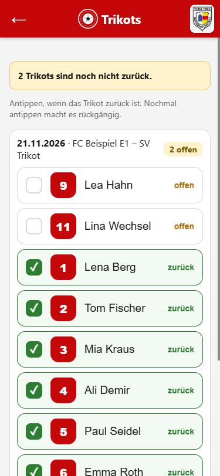
Die Kinder nehmen die Trikots zum Waschen mit nach Hause. Nach jedem Spiel gibt es dafür eine Checkliste mit Rückennummer und Name.
- Solange Trikots fehlen, steht auf der Startseite ein gelber Hinweis „… Trikots noch nicht zurück“ mit den Namen.
- Antippen öffnet die Liste. Offene Trikots stehen oben.
- Bringt ein Kind sein Trikot zurück: Zeile antippen – Haken. Nochmal antippen macht es rückgängig.
- „Alle Trikots dieses Spiels zurück“ hakt alle auf einmal ab.
Die Liste erreichen Sie auch über den Spielbericht („🎽 Trikot-Rückgabe“).
6. Korrigieren und nachtragen
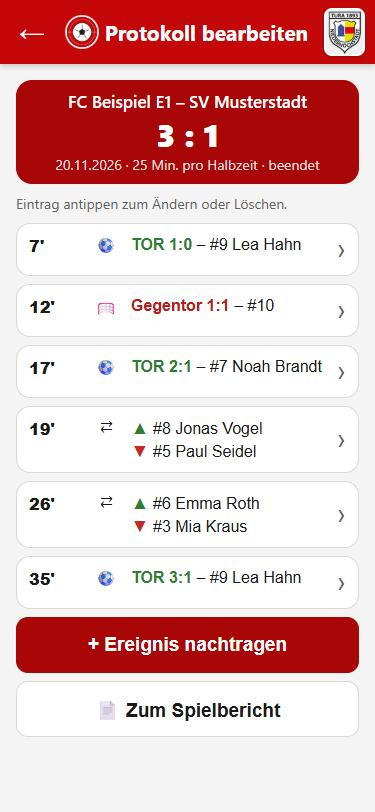
Über „Protokoll bearbeiten / nachtragen“ (im Bericht oder im Protokoll der Spielansicht) können Sie:
- einen Eintrag antippen und Minute oder Spieler ändern oder ihn löschen,
- mit „+ Ereignis nachtragen“ ein vergessenes Tor, Gegentor, Eigentor oder einen Wechsel ergänzen.
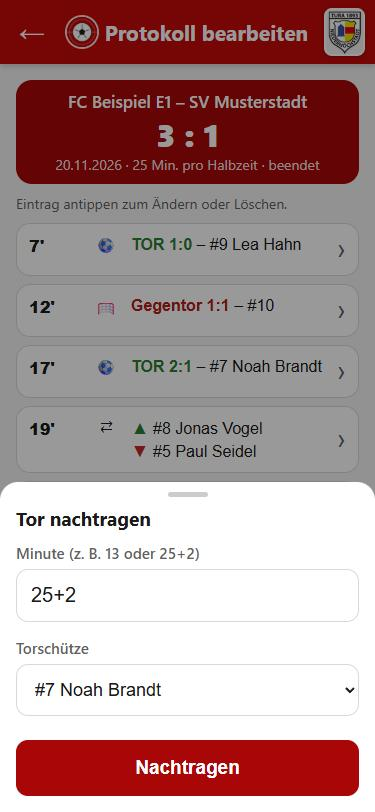
Minute eingeben
Einfach die Spielminute eintippen, z. B. 13. Nachspielzeit schreiben Sie so: 25+2 (bei 25 Minuten pro Halbzeit).
Ein ganzes Spiel nachträglich erfassen
- Spiel wie gewohnt anlegen (mit Startaufstellung), Uhr nicht starten.
- „Protokoll“ → „Bearbeiten / Nachtragen“ → alle Ereignisse eintragen.
- „Spiel als beendet markieren“ antippen – fertig ist der Bericht.
7. Archiv und Sicherung
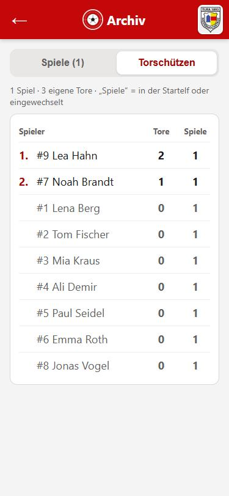
Archiv
Startseite → „Archiv“. Unter „Spiele“ stehen alle beendeten Spiele – antippen öffnet den Bericht.
Unter „Torschützen“ sehen Sie für jeden Spieler die Tore und die Zahl der Spiele (Startelf oder eingewechselt) über die ganze Saison.
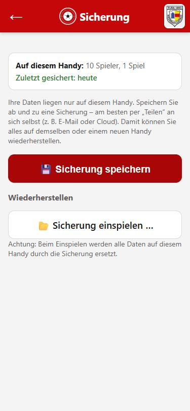
Sicherung – bitte regelmäßig!
Alle Daten liegen nur auf Ihrem Handy. Geht das Handy verloren oder wird Chrome zurückgesetzt, wären sie weg. Deshalb ab und zu:
- „Sicherung teilen“ und die Datei an sich selbst schicken (E-Mail oder Cloud) – am sichersten.
- oder „Sicherung speichern“ – die Datei landet im Ordner „Downloads“.
Mit „Sicherung einspielen“ holen Sie alles zurück – auch auf einem neuen Handy (vorher die App wie in Teil 1 installieren).
Häufige Fragen
Unten steht „Neue Version verfügbar“ – was tun?
Einfach „Jetzt laden“ antippen. Die App lädt neu, Ihre Daten bleiben erhalten. Das klappt nur mit Internet.
Sieht jemand anderes meine Spieler oder Spiele?
Nein. Alles wird nur auf Ihrem Handy gespeichert und nie ins Internet geschickt. Wer den Link bekommt, erhält eine leere App.
Brauche ich auf dem Sportplatz Internet?
Nein. Nur einmal zum Installieren und gelegentlich für Updates.
Das Handy vibriert nicht am Halbzeitende.
Vibrieren geht nur, wenn die App offen ist und der Bildschirm an ist. Die Zeit stimmt trotzdem: Öffnen Sie die App, dann erscheint Halbzeit bzw. Bericht sofort. Prüfen Sie außerdem, ob am Handy Vibration eingeschaltet ist.
Geht das auch auf dem iPhone?
Die App ist für Android gemacht. Auf dem iPhone in Safari: Teilen-Symbol → „Zum Home-Bildschirm“. Das meiste sollte laufen, Vibration gibt es dort aber nicht. Getestet ist das iPhone nicht.
Ich habe aus Versehen das falsche Tor eingetragen.
Direkt danach: „Rückgängig“ in der Meldung. Später: „Protokoll“ → rotes ✕ beim Eintrag, oder über „Bearbeiten / Nachtragen“ ändern.